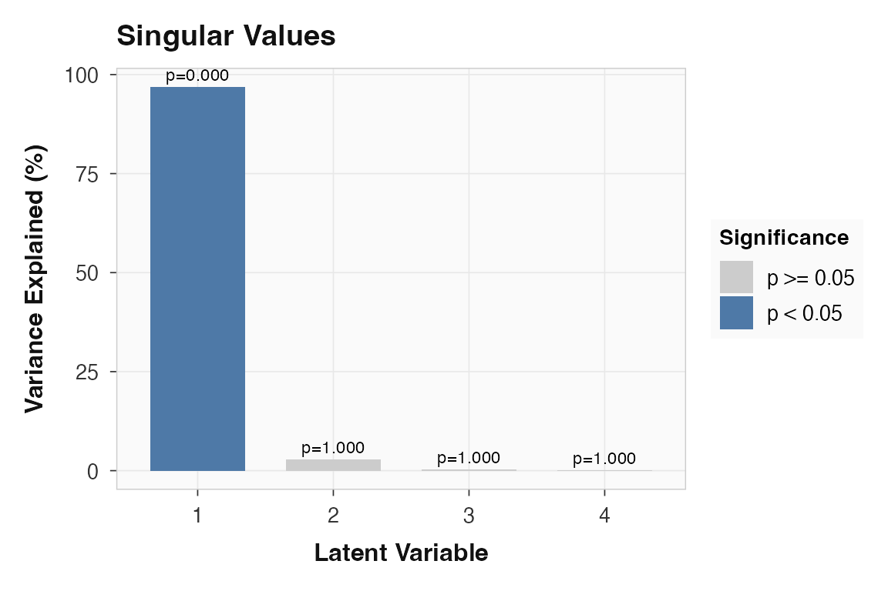
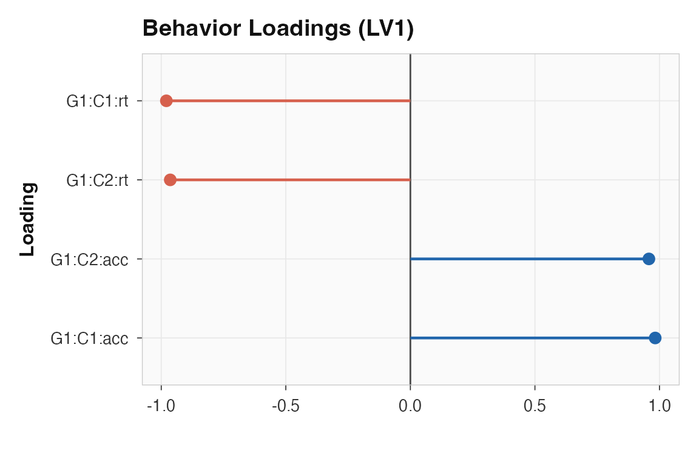
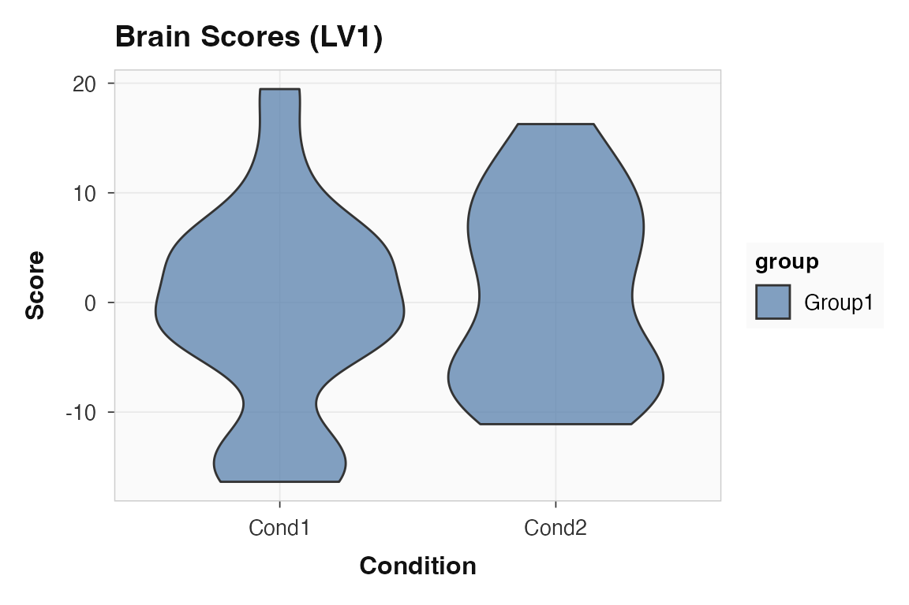
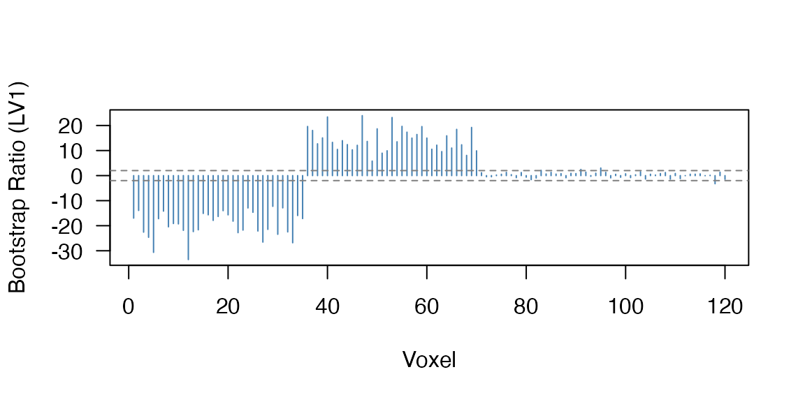

Behavior PLS finds latent variables that maximally capture the covariance between brain features and continuous behavioral measures — reaction time, accuracy, symptom scores, or any per-subject-condition variable. Where Task PLS asks “which brain patterns separate conditions?”, Behavior PLS asks “which brain patterns track individual differences in behavior?”
What data shape does Behavior PLS expect?
You need two matrices with the same stacked row structure (subjects within conditions, then groups):
- Brain matrix — rows = observations, columns = voxels/features
- Behavior matrix — rows = observations, columns = behavioral measures
This example has 18 subjects, 2 conditions, 120 voxels, and two behavioral measures. The synthetic data has a single latent factor driving both RT and accuracy in opposite directions, plus a condition-specific voxel block:
How do you run a behavior analysis?
behav_pls() is the convenience wrapper. It runs Behavior
PLS (method 3) with the behavior matrix as the second block:
behav_result <- behav_pls(
datamat_lst = list(brain_data),
behav_data = behav_data,
num_subj_lst = n_subj,
num_cond = n_cond,
nperm = 200,
nboot = 200,
progress = FALSE
)Check which latent variables are significant and how much variance each explains:
cbind(
pvalue = round(significance(behav_result), 3),
variance = round(singular_values(behav_result, normalize = TRUE), 1)
)
#> pvalue variance
#> LV1 0 96.9
#> LV2 1 2.9
#> LV3 1 0.2
#> LV4 1 0.0LV1 captures the dominant brain-behavior relationship. The scree plot makes the structure clear:
plot_singular_values(behav_result)
Singular value scree for the behavior PLS example. LV1 dominates.
Which behaviors define the first latent variable?
In Behavior PLS, loadings(..., type = "behavior")
returns the correlation-style weights linking each behavior-by-condition
cell to the latent variable. Each row is one condition-measure
combination.
round(loadings(behav_result, type = "behavior", lv = 1), 2)
#> [,1]
#> [1,] -0.98
#> [2,] 0.98
#> [3,] -0.96
#> [4,] 0.96RT and accuracy load with opposite signs, consistent with the planted relationship — subjects who are faster also tend to be more accurate on the latent dimension captured by LV1.
plot_loadings(behav_result, lv = 1, type = "behavior", plot_type = "dot")
Behavior loadings for LV1. RT and accuracy load in opposite directions, reflecting the shared latent factor.
How strongly do subjects express that pattern?
Brain scores show how each observation projects onto the latent variable. In a real analysis, you would check whether the pattern varies across conditions or groups:
plot_scores(behav_result, lv = 1, type = "brain", plot_type = "violin")
Brain scores for LV1. The spread reflects individual differences in the brain-behavior relationship.
Are the behavior correlations stable?
For behavior methods,
confidence(..., what = "correlation") returns bootstrap
confidence intervals on the brain-behavior correlations. Intervals that
exclude zero indicate a reliable relationship:
corr_ci <- confidence(behav_result, what = "correlation", lv = 1)
round(cbind(lower = corr_ci$lower[, 1], upper = corr_ci$upper[, 1]), 2)
#> lower upper
#> [1,] -0.95 -0.86
#> [2,] 0.90 0.97
#> [3,] -0.96 -0.84
#> [4,] 0.93 0.99Both measures show intervals that are clearly away from zero, confirming the stability of the brain-behavior association under resampling.
Which voxels contribute reliably?
Bootstrap ratios work the same way as in Task PLS — they indicate which voxels participate reliably in the latent pattern:
74 of 120 voxels have .

Bootstrap ratio profile. Voxels 1-35 and 36-70 show the planted latent factor; voxels 71-90 show the condition-specific signal.
The two voxel blocks (1-35 positive, 36-70 negative) mirror the planted latent structure, while the condition block (71-90) contributes more weakly.
Where to go next
| Goal | Resource |
|---|---|
| Multisite pooled behavior PLS with site diagnostics | vignette("site-pooling") |
| Task PLS workflow | vignette("plsrri") |
| Predictive validation from the same score space | vignette("predictive-measures") |
| Multiblock and seed PLS | vignette("multiblock-and-seed") |
| Behavior wrapper | ?behav_pls |
| Full engine with all options | ?pls_analysis |
| Loadings interpretation | ?plot_loadings |
| Bootstrap confidence intervals | ?confidence |